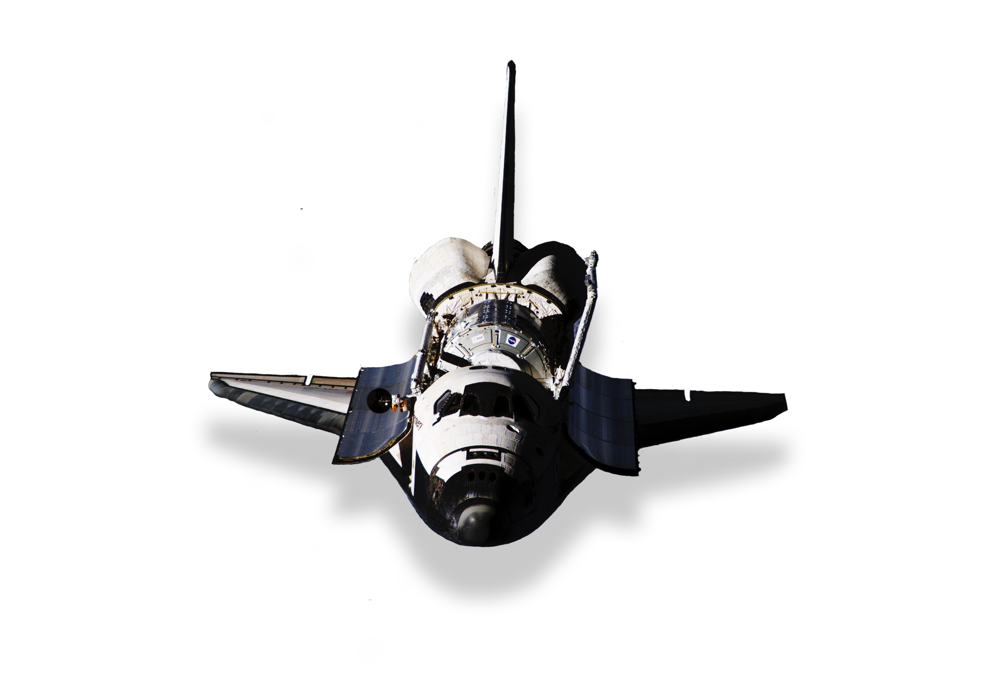
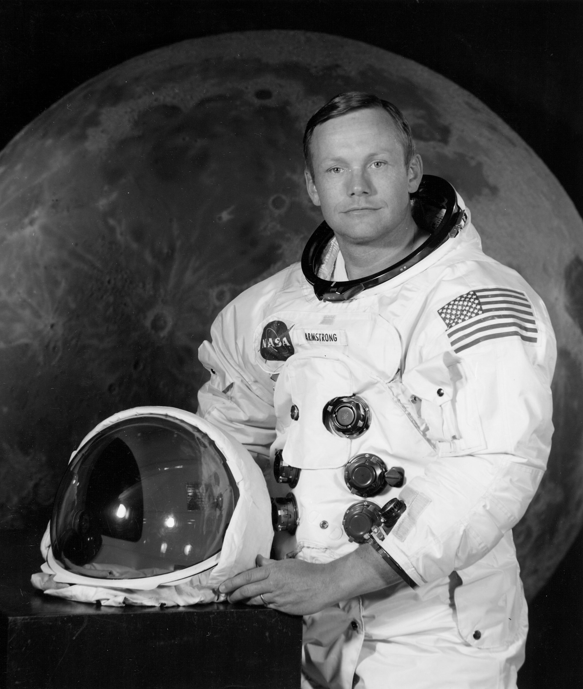

Hipporo
Danravel 우주여행사에서 운용하고있는
우주선 Hipporo 입니다
고객님들의 안전한 여행과 특별한 여행을위해서
NASA에서 우주비행 안전평가를 15회 완료하여
안전인증을 받았습니다
우주선 내부에는 편의시설이 구비되어
좀더 편안한 여행을 위해 최선을 다하고있습니다.


Tomi james
NASA 우주비행사 경력 7년
Tasla 우주항공개발팀 3년
스탬포드대학교 항공우주학과 박사
Danravel NASA 우주비행안전평가 7회 동행
"모든건 안전으로 부터 시작한다."
현 Danravel 협력 우주비행사